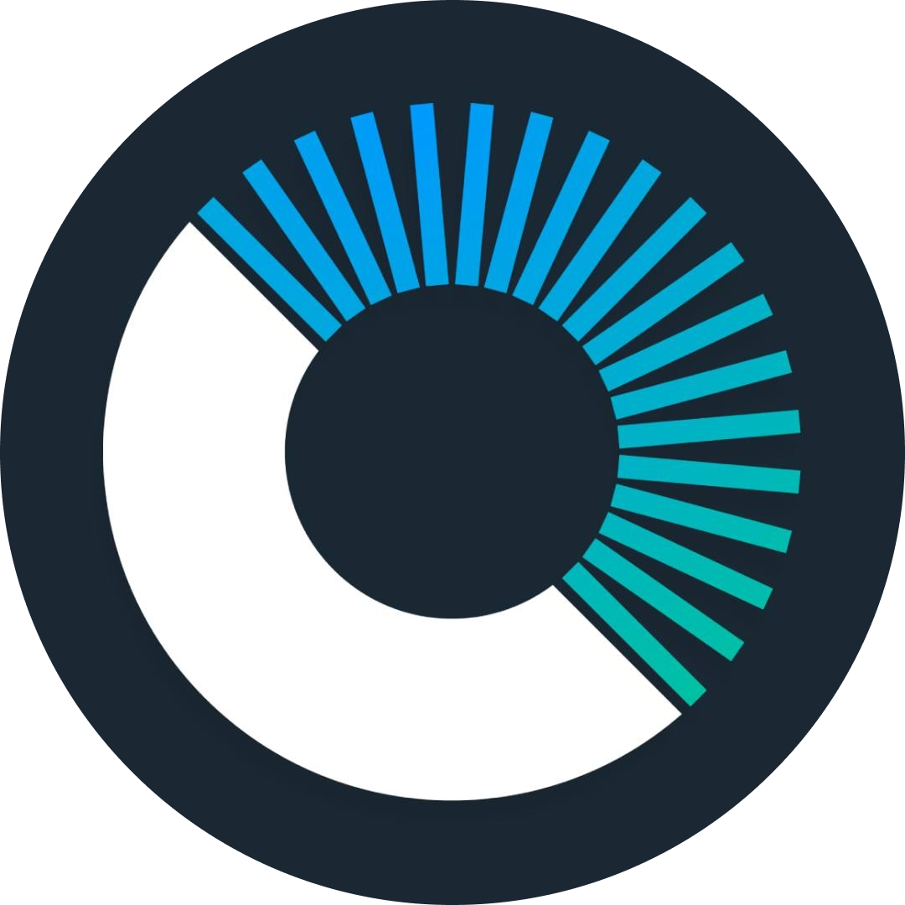

<ion-header class="ion-no-border">
  <ion-toolbar>
    <ion-title><ng-content></ng-content> </ion-title>
    <ion-buttons slot="start">
      
    </ion-buttons>
    <ion-buttons slot="end">
      <ion-button  expand="block" fill="clear" shape="round" (click)="logout()">
        <ion-icon name="arrow-back-outline"></ion-icon>
        <ion-label class="logout-label">Cerrar sesion</ion-label>
      </ion-button>
    </ion-buttons>
  </ion-toolbar>
</ion-header>
